Spring 2026 · Robotics
Warehouse Robot
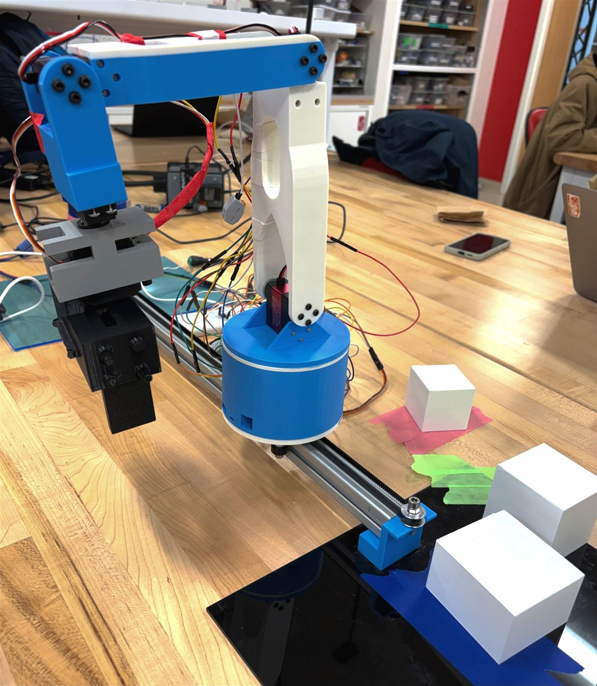
Objective
Mailroom sorting robot
We built a 6-DOF robotic arm that picks up three different sized boxes that should resemble packages. The arm measures the packages' size, and drops them into predefined location based on the boxes' size it detects. The robot runs on a prismatic rail joint plus five revolute joints, giving it reach and mobility. The whole system was designed, built, and programmed from scratch on a $100 budget.
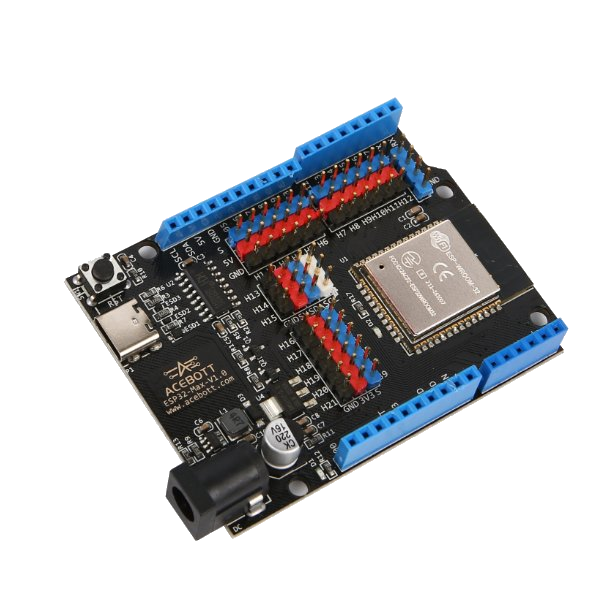
Design
DH Parameters & CAD
We modeled the robot using modified Denavit-Hartenberg parameters, assigning a coordinate frame to each of the six joints. Each link length was carefully chosen to work within our budget and keep the arm stable under load. After selecting 20 Nm torque servos for our joints, we revised the dimensions so the robot can reliably handle packages up to 200 g and ended up with link lengths of 18cm, 15cm, 9cm, and an end effector of 12.5cm. After creating the frame sketch, I used SolidWorks to model the links and 3D printed those on a Bambu 3D printer.
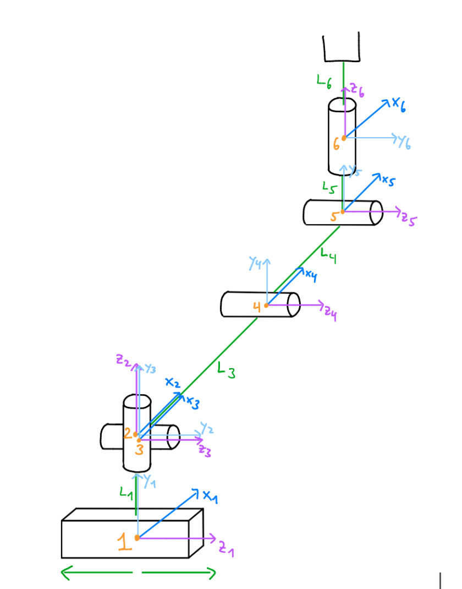
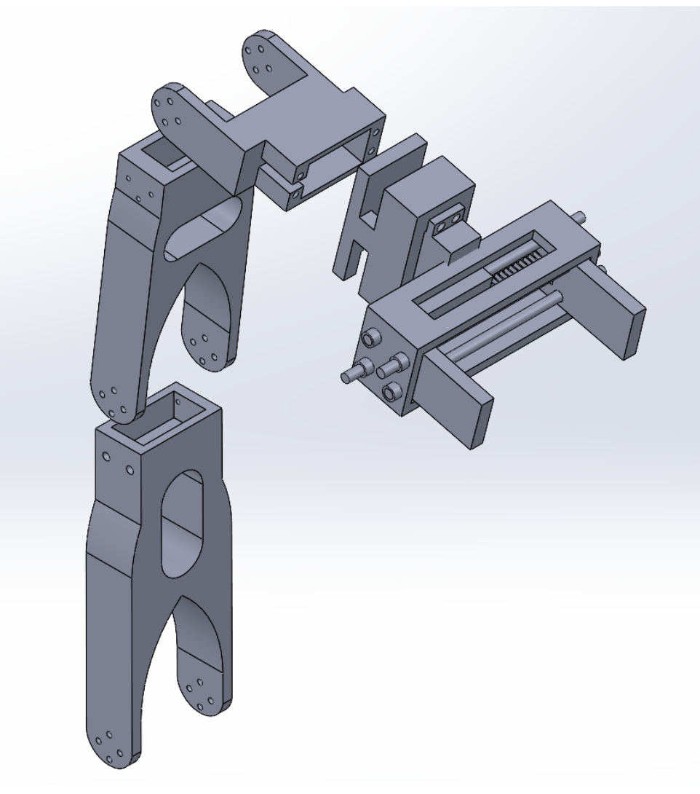
Hardware
Motors & Microcontroller
Five servo motors drive the revolute joints, one of them with a built-in closed-loop PID controller used on the gripper to track its movement. A NEMA 17 stepper motor moves the entire arm along the prismatic rail. An ESP32 microcontroller ties everything together, sending PWM signals to every joint simultaneously. To make motion look natural, we implemented sinusoidal easing so the arm accelerates and decelerates smoothly on every move. All logic — from picking to sorting to returning home — runs autonomously once the trigger button is pressed. The only human interaction is giving the gripper the package and giving support to the servo that carries the largest load because it got worn down from all the testing.
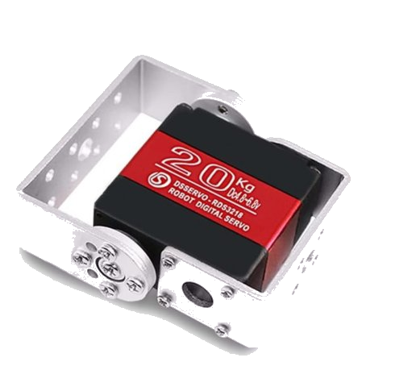
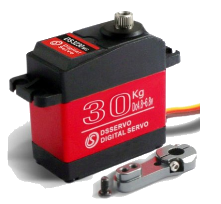
Sensing
Force & Angle feedback
When the gripper closes around the package, a force sensor on the finger detects the moment of contact. The ESP32 reads that signal and immediately stops the gripper which locks the box in place. Once the gripper stops closing, a built-in potentiometer in the gripper's motor reads the gripper's angle. A simple formula converts that angle into a width in centimeters, revealing the package size. The code then uses that measurement to decide which of the three pre-defined locations to deliver to.
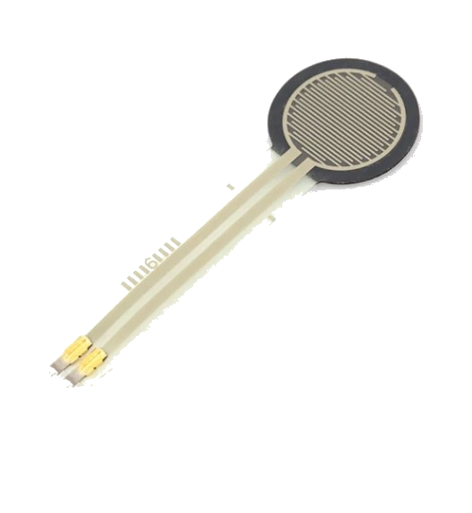
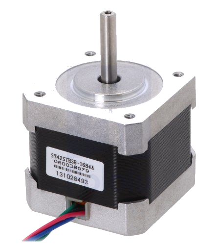
Kinematics
Simulating the Robot
We used MATLAB's Robotics Toolbox throughout the testing phase to model and validate the arm's motion. We solved inverse kinematics at each pick and place location, which gave us the exact joint angles to hardcode into the ESP32 through C++. Trajectories were planned in joint space to ensure the arm never passed through a singularity. We identified three singularity conditions, the most intuitive being when two links align in a straight line, effectively eliminating the joint between them. Finally, our joint limits were set to 0-180° for all servos, 270° for the servo responsible for the rack and pinion gripper, and 0-0.5 m for the prismatic rail.
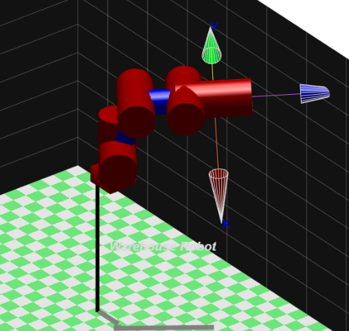
Results
80% success rate & lessons learned
The robot successfully picked and placed packages 4 out of every 5 attempts in live testing. The main failure mode was packages slipping from the gripper, caused by gearbox wear on a joint sitting right on top of the base that introduced jitter throughout the arm. Also, unsecured wiring and a small base that tipped under extreme reaches were also limiting factors. With more budget, stronger actuators and a wider two-rail base frame would directly fix those issues. In future iterations we would also add a camera for QR code scanning, to be able to sort between product types not just package size.
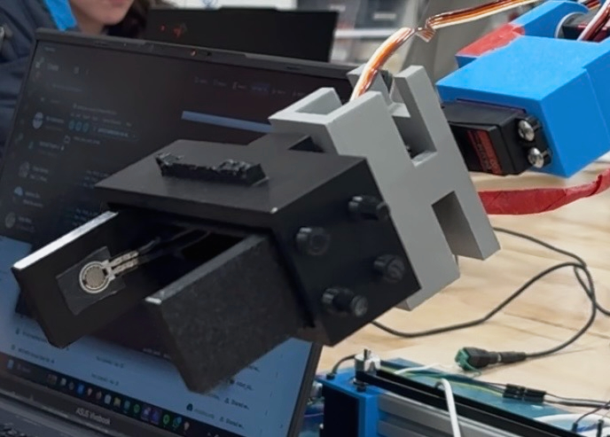
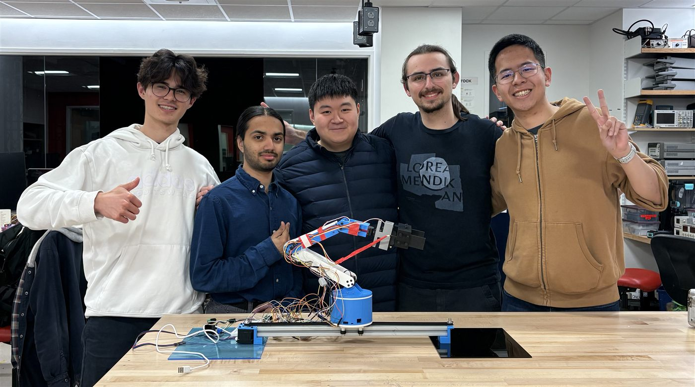
Demo